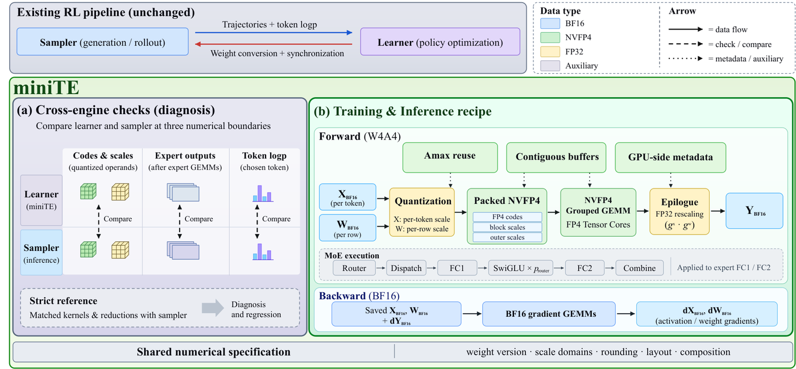
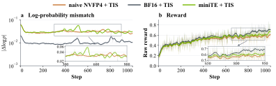

Two accountants keep the same ledger in a currency with coarse coins. They agree on the currency, but one rounds per page and the other per line, so their totals drift and every audit flags errors that are not real. miniTE makes them round the same rows the same way, and checks the books at three places.
두 회계사가 동전 단위가 큰 통화로 같은 장부를 쓴다고 해 보자. 통화는 같지만 한 사람은 페이지 단위로, 다른 사람은 줄 단위로 반올림하니 합계가 어긋나고, 감사할 때마다 가짜 오류가 잡힌다. miniTE는 두 사람이 같은 줄을 같은 방식으로 반올림하게 하고 장부를 세 곳에서 대조한다.
How it works: same RL loop, a specified 4-bit path작동 방식은 같은 RL 루프, 명시된 4비트 경로
The RL objective is untouched; miniTE swaps in a 4-bit expert path for the learner and adds checks against the sampler. Attention and non-expert modules stay in higher precision.
RL 목적함수는 그대로이고, miniTE는 학습기에 4비트 전문가 경로를 넣고 샘플러와 대조하는 검사를 더한다. 어텐션과 전문가가 아닌 모듈은 더 높은 정밀도로 남는다.

- Diagnose at a frozen policy.고정된 정책에서 진단.Both engines score identical token sequences, so any gap comes from execution, not weight lag or sampling.두 엔진이 같은 토큰 시퀀스를 채점하므로, 차이가 나면 가중치 지연이나 샘플링이 아니라 계산 방식 때문이다.
- Per-token W4A4 forward.토큰 단위 W4A4 순전파.Each token row and weight row gets its own outer scale, so one token's outlier cannot change another token's codes.토큰 행과 가중치 행마다 바깥 스케일을 따로 두어, 한 토큰의 이상값이 다른 토큰의 코드를 바꾸지 못한다.
- BF16 backward, fused prep.BF16 역전파와 준비 단계 융합.Gradients use saved BF16 operands, and quantization shares buffers and statistics with the grouped GEMM.기울기는 저장해 둔 BF16 피연산자로 계산하고, 양자화는 grouped GEMM과 버퍼와 통계를 함께 쓴다.
Key point: a format is not an execution핵심은 형식과 실제 계산은 다르다는 것
Before any training step, switching both engines to NVFP4 more than doubles the worst-case disagreement and nearly doubles the share of tokens past the clipping bounds. In RL those tokens bend importance ratios and clipping decisions.
학습을 한 스텝도 하기 전에, 두 엔진을 NVFP4로 바꾸는 것만으로 최악의 불일치는 두 배 넘게, 클리핑 경계를 넘는 토큰 비율은 두 배 가까이 커진다. RL에서는 이런 토큰이 중요도 비율과 클리핑 판단을 비튼다.
Results: most of the 4-bit loss on hard math comes back결과는 어려운 수학에서 4비트 손실을 대부분 되찾음
Naive NVFP4 loses 14.4 AIME24 points to BF16; miniTE wins back 10 of them, while easy GSM8K barely moves. A fully matched reference drives the gap to about 10−8 and keeps reward where the unaligned run falls.
단순 NVFP4는 AIME24에서 BF16보다 14.4점을 잃고, miniTE는 그중 10점을 되찾는다. 쉬운 GSM8K는 거의 움직이지 않는다. 계산을 완전히 맞춘 기준 설정은 차이를 약 10−8까지 줄이고, 맞추지 않은 실행이 무너지는 구간에서도 보상을 유지한다.

| Config | AIME24 | AIME25 | MATH-500 | GSM8K | IFEval | Avg |
|---|---|---|---|---|---|---|
| BF16 | 41.11 | 31.11 | 90.05 | 93.57 | 38.36 | 58.84 |
| Naive NVFP4 | 26.67 | 20.56 | 86.90 | 94.71 | 43.99 | 54.57 |
| miniTE | 36.67 | 24.44 | 87.45 | 94.79 | 38.40 | 56.35 |
When you quantize the reasoning-RL loop, the format name does not define the numbers. Specify scale domains, rounding, reduction order, and cast placement in both engines, and measure the log-prob tail at a frozen policy before you train.추론 RL 루프를 양자화할 때 형식 이름이 실제 숫자를 정해 주지는 않는다. 두 엔진에서 스케일 범위, 반올림, 덧셈 순서, 형 변환 위치를 명시하고, 학습 전에 고정된 정책에서 로그 확률 꼬리를 재 보자.
Each configuration is a single 1,000-step run, and miniTE still trails BF16 by 2.5 points on average and loses 5.6 IFEval points to naive NVFP4. The 1.39× covers the learner only; in a colocated RL window weight conversion and sync grew from 9.9 to 55.3 s, so whole-iteration speed is unproven.설정마다 1,000스텝 실행이 한 번뿐이고, miniTE는 평균에서 여전히 BF16보다 2.5점 낮으며 IFEval에서는 단순 NVFP4보다 5.6점 낮다. 1.39배는 학습기만의 수치다. 같은 장비에서 RL을 돌린 구간에서는 가중치 변환과 동기화가 9.9초에서 55.3초로 늘어서, 반복 전체가 빨라지는지는 입증되지 않았다.